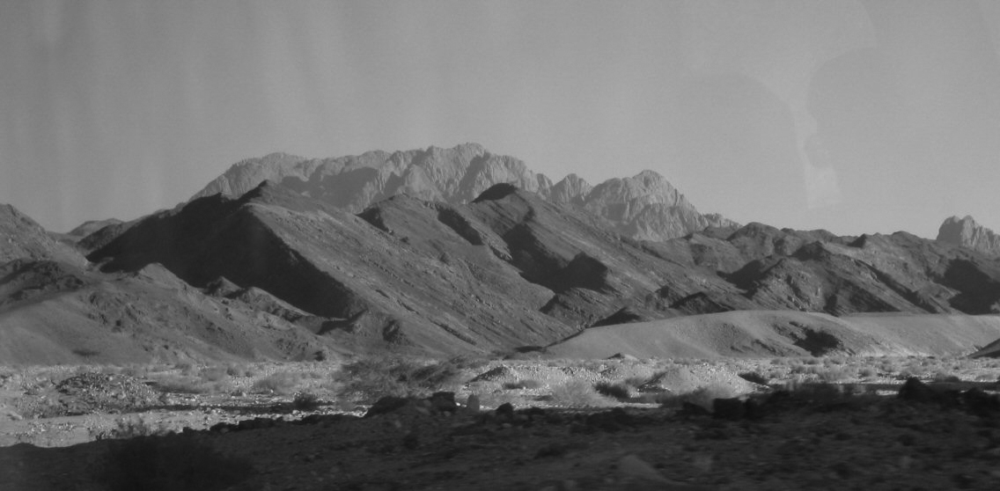

Musa çotandır, kendisinde ruhsal bir irtibatın başladığının farkındaydı... Bu bağlantıyı içten içe hissediyor ancak tam olarak bu bağlantının kökenini adlandıramıyordu... İnisiyasyon’un belli bir aşamasından sonra, yapılan çalışmalar inisiyeyi belli bir “ruhsal planla” irtibata geçirebilmekteydi. Bu irtibat, inisiyasyonun en önemli bölümünü oluştururdu. Bir inisiye ne kadar yüksek seviyeli bir ruhsal planla irtibat kurabilirse, ilhamı da o denli yüksek olurdu.
Bu çalışmalar genellikle mabetlerde ya da dağlardaki gizli yeraltı tünellerinde, insanlardan uzak yerlerde yapılırdı... Aynen Sina Dağı’nda olduğu gibi... Nitekim Sina Dağı’nın bulunduğu yöredeki Serbal Kayalıkları’ndaki mağarada inisiyelerin ilhamlarının açıldığından az önce ezoterik kaynakların söz ettiğinden bahsetmiştik. Nitekim, Musa da, uzun bir süredir anlamlandıramadığı irtibatının kökenlerini orada farkedecekti...
İşte Musa böyle bir hal içinde, “sırlar mağarasına” doğru yola çıkmıştı...
Mağaranın önüne geldiğinde tam içeri girmek üzereyken, bir anda kendini göz kamaştırıcı bir ışığın tam ortasında buluverdi. Yere baktığında bastığı toprağın bir fosfor gibi ışımaya başladığını farketti. Çevresindeki kayalar da sanki alevden bir deniz haline dönüşmüşlerdi... Şimdiye kadar hiç karşılaşmadığı şeyler olmaya başlamıştı... Neler olduğunu anlamaya çalışırken mağaranın girişinde, ışıklar içinde, adeta ışıktan bir bedene sahip olduğunu gördüğü bir varlığın kendisine doğru bakmakta olduğunu farketti. Tam o anda, onun çevresine yaydığı enerjiden çarpılmışcasına yere kapaklandı... Varlığın bakışları içine kadar işlemiş ve içinde adlandıramadığı garip bir değişimin başladığını farketmişti. Adeta sezgilerinin kapısı açılmış ve içine doğan büyük bir ilhamla bundan sonra yapacaklarını gönül gözüyle yani durugörü yeteneğiyle görmeye başlamıştı... Gözünün önünden bundan sonra yapacakları teker teker bir film şeridi gibi geçiyordu... Ancak bütün bunlar sıradan bir insanın yapabileceği şeyler değildi... Hatta bir inisiye bile olsa Musa’dan beklenenlerin gerçekleştirilebilmesi imkansız gibi görünüyordu...
Bir anda böyle bir vazifeyi ben nasıl gerçekleştirebilirim? diye düşünerek oradan kaçıp uzaklaşmayı bile düşündü!...
Tam o anda: “Musa... Musa...” diye bir ses işitti. Gayrı ihtiyari “Efendim...” diyerek karşılık verdi. Karşısındaki ışıklar içindeki varlık kendisiyle konuşmaya başlamıştı... Bu konuşmayı kesip arkasını dönüp oradan gidemezdi... Kalbi sanki yerinden fırlayacakmış gibi çarpıyordu... Çevresine göz kamaştırıcı ışıklar saçmaya devam eden varlığı görmemek için elleriyle yüzünü kapatmış öylece olduğu yerde kala kalmıştı... Büyük bir heyecan içinde bundan sonra ne olacağını düşünüyordu ki, varlık yeniden konuşmaya başladı:

– “Buraya sakın yaklaşma... Ayaklarından pabuçlarını çıkart. Zira üzerinde durduğun yer kutsal bir yerdir.”
Musa elleriyle yüzünü saklamış bir halde, hala olduğu yerde öylece duruyordu... Bunun üzerine:
– “Benim karşımda bile titriyorsun, bir de kalkmış Elohim’i arıyorsun?...”
Musa büyük bir zorlukla: “Kimsin sen?” diyebildi...
– “Elohim’in bir ışını, bir güneş meleği, var Olan’ın ve var olmaya devam edecek Olan’ın bir elçisiyim...”
– “Emrin nedir?”
– “İsrailoğullarına şunu söyleyeceksin: ‘Sizi köle hayatı yaşadığınız ülkeden çıkarayım diye beni size elçi olarak, Ezeli-Ebedi Olan, atalarımızın Tanrısı, ibrahim’in, ishak’ın ve Yakup’un Tanrısı yolladı...’”
– “Ben kimim ki israiloğullarını Mısır’dan çıkartabileyim?”
– “Hep seninle olacağım... Elohim’in ateşini gönlüne, kelamını da dudaklarına yerleştireceğim. Kırk yıldır onun özlemiyle yanıp tutuşuyorsun. Sesin ta O’na kadar ulaştı. İşte, seni O’nun namına sarıp sarmalıyorum... Elohim’in oğlu, bundan böyle hep bana ait olacaksın...”
Bu sözlerden sonra Musa’yı bir başka endişe sarmaya başladı: “Fakat bana inanmayacaklar ve sözümü dinlemeyecekler?” dedi.
Bunun üzerine Musa’nın işini kolaylaştıracak bir takım yardımların kendisine nasıl yapılacağı konusunda, varlık bir takım açıklamalarda bulunur. Önce Musa’nın elinde tuttuğu değneği yere atmasını ister. Değnek yere düşer düşmez bir anda yılana dönüştüğü görülür. Daha sonra Musa’nın elini önce cüzzamlı bir el haline çevirir ve kısa bir süre sonra yeniden eski haline getirtir.
Bu uygulamalar aslında majik ve parapsişik temellere dayanan olaylardır. Mucizevi olayların gerçekleştirilmesinde kulanılan bu teknikler daha sonraları Musa’nın çok işine yaramıştır. Özellikle o devirlerde mucizelerin halk üzerinde önemli bir etkisi vardı. Ve her peygamberden bu tür mucizeler gerçekleştirilmesi istenmiştir. Musa da eğer kendisine o mağarada öğretilen tekniklere sahip olmasaydı peygamberlik vazifesini yerine getirmesi son derece zor olurdu. Bu nedenle parapsişik temellere dayanan bu tür majik uygulama teknikleri kendisine öğretilmiştir. Nitekim bu, Tevrat’ta da açıkca anlatılmıştır:
“Ve şimdi git ve ben senin ağzınla beraber olacağım ve söyleyeceğin şeyi sana öğreteceğim.” (ÇIKIŞ, Bab: 4/12)
Mağaradaki bu konuşma sırasında Musa bir başka konuda daha tereddüt gösterir: Kendisinin iyi bir konuşmacı olmadığını ve bu nedenle sözlerinin etkili olamayacağından kuşku duyduğunu ifade eder. Musa aslında bu kuşkusunda hiç de haksız değildir. Çünkü Musa’nın iyi konuşamadığı biliniyor...
Musa’ının bu tereddütü karşısında varlığın söyledikleri Tevrat’ta şöyle geçer:
“Ve Rab Musaya karşı öfkelenip dedi: Senin kardeşin Levili Harun yok mu? Bilirim ki, o iyi söyler... Ve kendisine söyleyeceksin ve sözleri onun ağzına koyacaksın ve ben senin ağzınla ve onun ağzı ile beraber olacağım ve yapacağınız şeyi size öğreteceğim.” (ÇIKIŞ, Bab: 4/14-15)
Tevrat’ın ÇIKIŞ Bölümü’nün 4. Bab’ında geçen bu anlatımlardan, Musa’nın medyomik bağlantısı yani vahiy kanalıyla olan irtibatı açıkça görülmektedir. Dikkatlerden kaçmaması gereken bir başka nokta da, dünyaya belli bir görevle doğan büyük vazifelilerin, çevrelerinde kendilerine yardımcı olacak kadroyla birlikte dünyaya gelmiş olduklarıdır. Peygamberlerin çevrelerinde adeta bir halka gibi toplanan bu özel vazifeli grup; Hristiyanlıkta “havariler”, İslamiyet’te ise “sahabeler” olarak adlandırılmıştır.
15. Ayette Musa’nın kardeşi olduğu ifade edilen Levili Harun aslında onun aynı anneden doğan kardeşi anlamında değil, dünyaya doğmadan önce bağlı bulundukları aynı ruhsal planın üyeleri olduğu anlamındadır.
Bu sözlerden cesaret alan Musa: “Bana Elohim’i göster. O’nun canlı ateşini göreyim” dedi...
Başını kaldırdığında mağarada her şey normale dönmüştü. Ortada ne ateş denizi kalmıştı, ne de ışıklar içindeki varlık... Güneş çoktan batmış ve Horeb vadisini o her zamanki ölüm sessizliği kaplamıştı...
Yaşadığı bu paranormal olay karşısında öyle yüksek seviyeli yoğun bir enerjiye maruz kalmıştı ki, tüm vücudunun adeta felce uğradığını hisstti. Hatta yaşadığı bu paranormal olay esnasında birara vücudunun yanıp kül olacağını zannetmişti. Bir müddet orada bitkin bir halde, külçe gibi yere yığılıp kaldıktan sonra Yetro’nun mabedine geri döndü...
Vücudundaki bitkinlik şimdi yerini tarif edilemez yoğunluktaki bir enerjiye terk etmişti... Vazifesine artık hazırdı... [1]
Kendisinden peygamberlik yapması istendiğini işte ilk kez şimdi açıkça farkediyordu... Bir zamanlar annesine vazifesinin ne olduğunu bilmediğini söyleyen Musa, artık sadece bir Osiris rahibi değil, peygamberlik vazifesiyle yükümlü bir inisiyeydi...